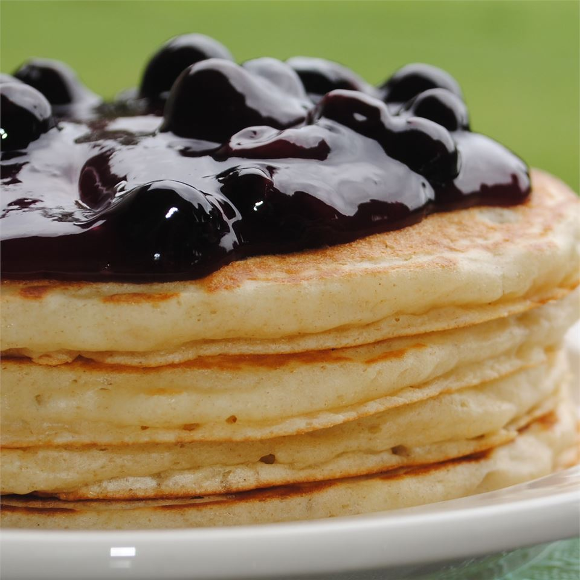

Buttermilk Pancake

A very light and fluffy pancake recipe that requires fresh buttermilk, but it's the best I've ever made!
As convenient as a store-bought mix can be, every home cook needs a good buttermilk pancake recipe in their repertoire. Don't have a tried-and-true favorite yet? You're in luck!
Ingredients
You probably already have everything required to make this top-rated buttermilk pancake recipe. Here's what you'll need:
- Flour
- Sugar
- Leaveners
- Salt
- Buttermilk
- Milk
- Eggs
- Butter
Steps
- Combine flour, sugar, baking powder, baking soda, and salt in a large bowl.
- Beat the buttermilk, milk, eggs, and melted butter together in a separate bowl. Do not combine the wet and dry ingredients until right before you cook the pancakes.
- Add the wet ingredients to the dry ingredients and mix with a wooden spoon or fork until the mixtures are just-blended.
- Scoop the batter onto a hot, oiled griddle and cook until the pancake is bubbly on the top.
- Flip with a spatula and cook until both sides are brown.
- Top with maple syrup or any additional toppings.
Back to home